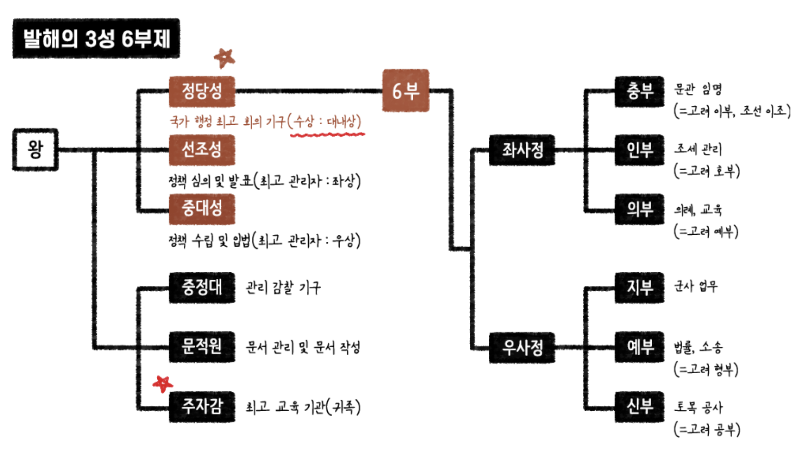

발해
698년 ~ 926년
발해는 옛 고구려 장군 걸걸중상의 아들 대조영이 698년 지린성 동모산에서 건국했습니다. 발해는 대조영인 고왕을 포함하여 총 15명의 왕이 나라를 다스렸으나 시험에 잘나오는 4명의 왕에 대해서만 요약정리를 했습니다. 한때 해동성국이라 불렸던 발해가 순식간에 멸망한 이유에 대해서는 여러설이 존재하고 있지만, 시험을 보기 위해서는 거란과의 전쟁으로 인한 멸망으로만 알아두시면 될 것 같습니다.
통치체제 : 당나라의 3성 6부제 수용(독자성), 정당성(대내상), 지방 5경 15부 62주, 중앙군 10위(대장군/장군)
관련인물 : 대조영(고구려 장군 출신), 걸사비우, 문왕의 딸들 둘째 정혜공주와 넷째 정효공주, 장문휴
유물유적 : 정혜공주묘(고구려식, 모줄임 천장, 돌사자상), 정효공주묘(중국 남조 양나라 영향을 받은 벽돌무덤, 벽화 존재), 영광탑, 발해 석등, 이불병좌상, 문왕 때 수도인 상경 용천부에서 온돌 발견, 주작대로(당나라의 영향), 연꽃무늬 수막새, 발해의 특산물로는 솔빈부의 말 유명
발해 역대 왕조 더보기 >
[1] 고왕(대조영) : 대조영이 동모산에서 발해 건국(713), 연호 사용 : "천통"
[2] 무왕(대무예) : 흑수말갈 처치, 북만주일대 장악, 당나라 산둥 지방 공격(장문휴), 중경으로 천도, 연호 사용 : "인안"
[3] 문왕(대흠무) : 친중국(발해관), 친신라(신라도), 국립대학 주자감 설치, 당나라의 3성 6부제 수용(독자성), 중경 → 상경 용천부 → 동경으로 천도, 연호 사용 : "대흥", 정혜공주묘(고구려식, 굴식 돌방무덤, 모줄임 천장), 정효공주묘(벽돌 무덤, 벽화 존재), 일본에 보낸 국서에 '고려 국왕'이라 칭함(고구려 계승)
* 상경 용천부 : 발해의 3대 문왕이 755년에 중경 현덕부에서 옮긴 후 멸망할 때까지의 수도(중간에 동경으로 잠시 천도를 한적이 있다.)
[10] 선왕(대인수) : 해동성국(전성기), 5경 15부 62주, 요동 진출(옛 고구려 지역 확보), 연호 사용 : "건흥"
